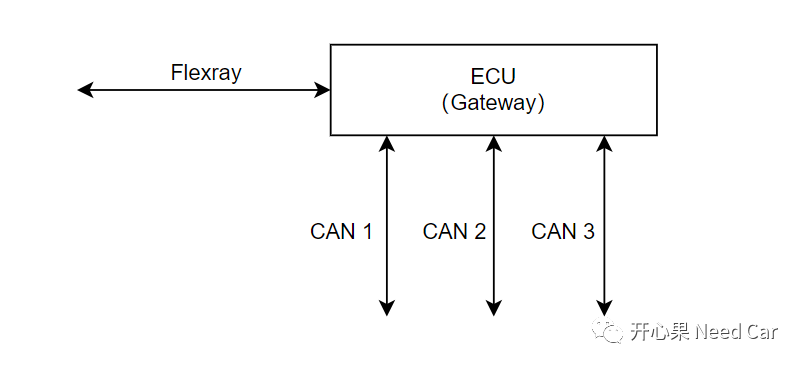
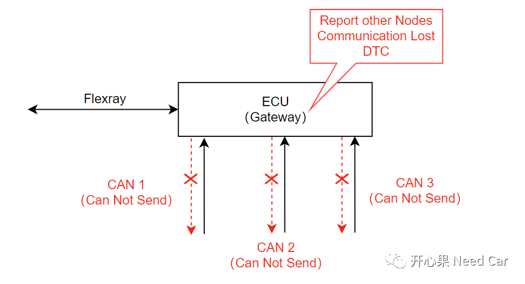
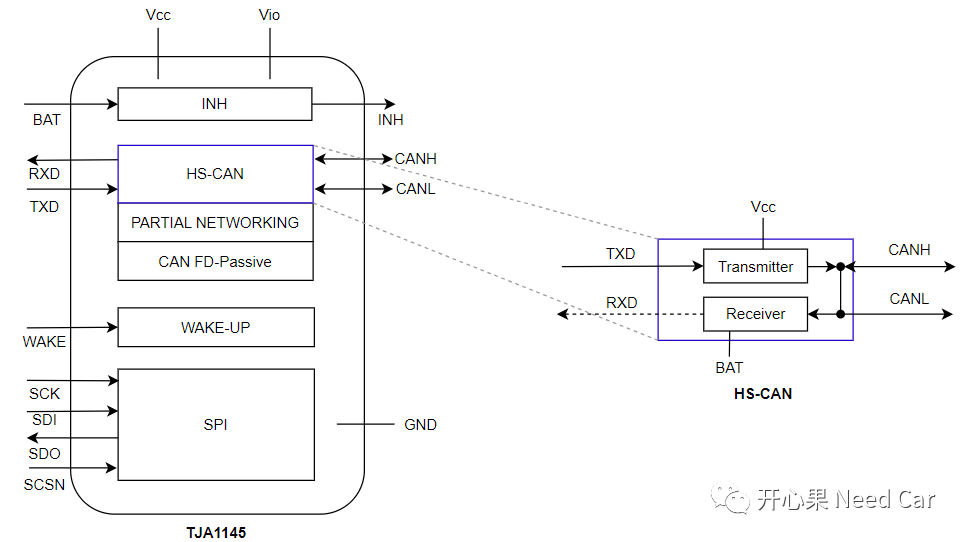
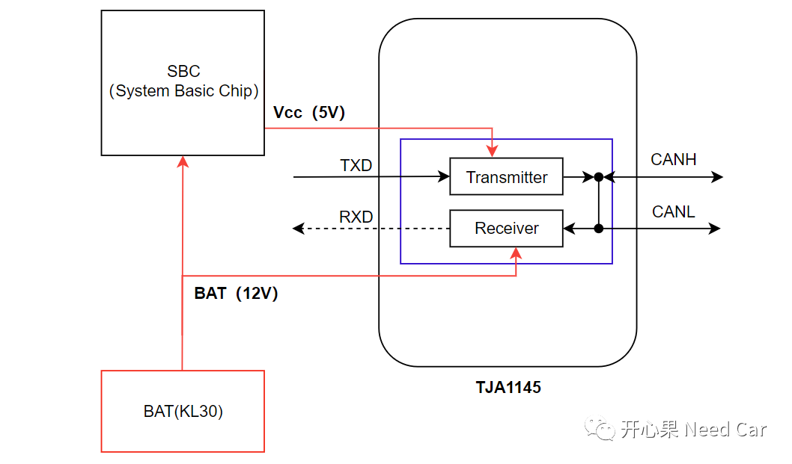
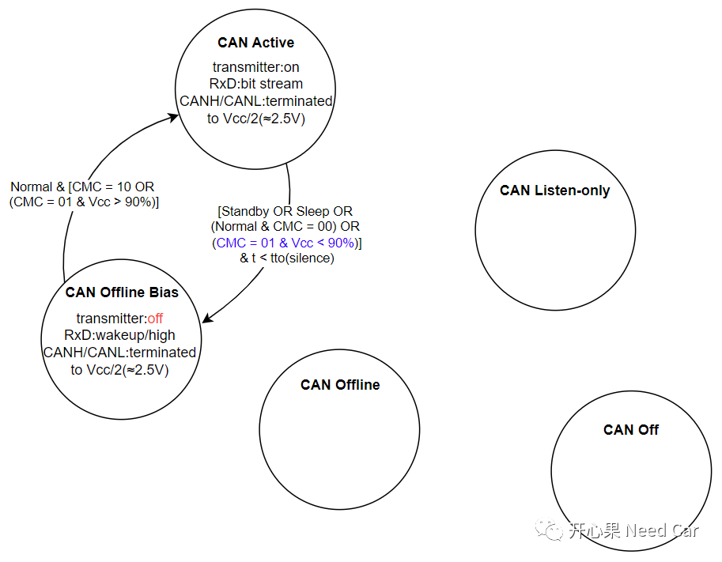
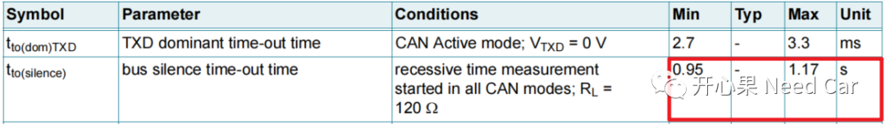
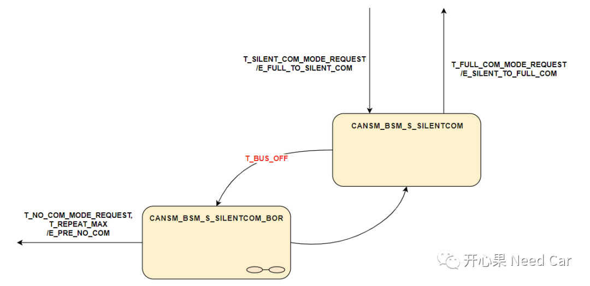
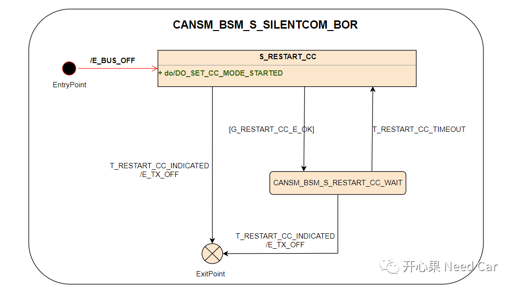

对于CAN通信，大家应该在清楚不过了。然而，越是你熟悉的东西，可能"伤害"你越深。本文，分享一个关于CAN通信的工程问题：CAN Transceiver模式选择不当，导致ECU不在线（CAN Channel无法通信）。
先说问题ECU的网络拓扑，问题ECU是一个网关角色（Gateway）,它包含一路Flexray和3路CAN，示意如下：

问题发生时，发现：ECU的3路CAN不能发送报文，但是3路CAN总线上，其它节点可以正常发送报文（包括网络管理报文）。虽然其它节点在CAN总线上可以发送CAN报文，ECU还是错报了其它节点通信丢失（误报DTC）。与此同时，ECU对应的Flexray总线依然可以正常通信，即：收/发正常。问题示意如下：

在解释根因之前，这里需要对CAN Transceiver做一些讲解补充。以1145 CAN收发器为例，我们常说的"Transceiver"，很多时候是在说HS-CAN Transceiver（HS：High Speed），而HS-CAN Transceiver只是TJA1145中的一部分，如下所示：

数字信号（digital data）与模拟信号（analog data）转换依赖于HS-CAN。在HS-CAN的内部有一个数据发送器（Transmitter），将收到的数字信号转换成CAN H、CAN L上的模拟信号；同时，通过接收器（Receiver），将CAN H、CAN L上的模拟信号转换成数字信号，传输给uC的CAN Controller。
对于Transmitter，由Vcc提供电压，一般为5V，而对于Receiver，一般由BAT（KL30）提供电压，一般为12V。而KL30属于常电，即使主芯片断电以后，HS-CAN也可以一直监听总线变化，当收到总线有效唤醒事件（eg：网络管理报文），使能INH，进而使能SBC，SBC给主芯片、TJA1145等外围器件供电，ECU供电后，ECU被唤醒。其中，Vcc电压由电源管理芯片（SBC）输出，SBC需要完成初始化动作，才能稳定输出Vcc电压，如下所示：

（二）TJA1145、HS-CAN模式
既然TJA1145和HS-CAN是包含关系，因此，两者的状态机就不能混为一谈。TJA1145包含Normal、Standby、Sleep、Overtemp、Off五种操作模式，HS-CAN包含Active、Listen-only、Offline、Offline Bias四种状态模式。这里主要描述一下HS-CAN的Offline、Offline Bias状态。- Offline Bias：离线偏置状态。怎么理解呢？我们知道，模拟信号的产生依赖于CAN H、CAN L之间的压差。输出隐性（"1"）位时，CAN H与CAN L均等于2.5V，输出显性（"0"）位时，CAN H（3.5V）-CAN L（1.5V）将产生2V的压差。所以，HS-CAN处于Offline Bias模式时，CAN H、CAN L偏置到2.5V；
- Offline：离线状态。HS-CAN处于Offline模式时，CAN H、CAN L偏置到GND，CAN H = CAN L = 0V。
当HS-CAN进入Offline Bias或者Offline状态时，将停止数字信号与模拟信号的转换工作。HS-CAN只有在Active状态下才能进行数字信号与模拟信号的转换。
HS-CAN有五种状态，我们聚焦CAN Active和CAN Offline Bias状态，CAN Active进入CAN Offline Bias有多条路径，如下所示：

其中CMC = 01 & Vcc < 90%时，HS-CAN会进入CAN Offline Bias模式，带来的影响是什么呢？Transmitter进入off状态，即：停止发送报文。如果CC（Communication Controller）依然在请求发送数据，则会进一步导致CC进入Busoff状态，使得节点停发报文。这个细节点可以参考前文《工程思考：CAN Transceiver不工作，节点还会Busoff吗？》。
所以，当SBC的电压在某种外部环境作用下，导致Vcc不稳定，低于阈值（欠压），进而导致HS-CAN不工作，即可引发无法通信问题。既然CMC配置成01时，会对Vcc电压监控，为了避免过于苛刻的监控。可以将CMC配置成10，不监测Vcc电压。

怎么理解呢？当总线（Bus）没有报文收发或者扰动以后，HS-CAN会进入离线偏置状态（Offline Bias），也就是空闲状态，CAN H = CAN L = 2.5V（隐性值，"1"），如果在此期间，收到一帧有效网络管理报文，网络依然可以快速唤醒。如果在1s时间内，总线上依然没有报文或者扰动，HS-CAN由Offline Bias状态进入Off状态，CAN H = CAN L = 0V（GND），如果要唤醒网络，可能需要两帧有效的网络管理报文，一帧将HS-CAN从Off状态激活到Offline Bias状态，第二帧用于识别报文是有效的网络管理报文，如下所示：
拓展补充二：
如果软件架构使用CP Autocar，发生Busoff以后，驱动层会将Busoff状态信息传递给上层，以便于模式管理。这里拓展一下CanSM的状态变化，聚焦与Busoff相关的CANSM_BSM_S_SILENTCOM_BOR、CANSM_BSM_S_SILENTCOM，如下所示：

当某个CAN通道发生了Busoff异常以后，CanSM模块进入CANSM_BSM_S_SILENTCOM_BOR状态，在这个模式下，关闭PDU的发送，且不断尝试重启CC。从CANSM_BSM_S_SILENTCOM_BOR状态退出以后，如果没有NO_COM请求，CC重启次数未超限，进入CANSM_BSM_S_SILENTCOM，等待FULL_COM请求；如果有NO_COM请求，CC重启次数超限，进入CANSM_BSM_S_PRE_NOCOM状态。在CANSM_BSM_S_SILENTCOM_BOR状态下的具体动作如下所示：
因为Busoff事件进入CANSM_BSM_S_SILENTCOM_BOR状态，一般，硬件（CC）自动进入Stoped状态，需要重启（进入Started状态）才能工作。如果没有设置重启OK的保护条件，重启一次CC（可能成功，也可能失败），关闭PDU发送退出此状态；如果使能重启OK的保护条件，会一直重启CC，直到重启CC成功，由于一直在尝试重启CC（调用接口CanIf_SetControllerMode()），可能会因为等待超时（eg：CanTimeoutDuration = 2ms）而退出等待状态，重新进入S_RESTART_CC状态。提示：通信类问题，涉及到软件、硬件的知识繁杂，很难一篇文章讲透所有细节，如能每次领悟一、二，亦是进步。
点击下方关注，一起聊聊Autosar/嵌入式，如果需要，联系作者进群，给你更专业的解答